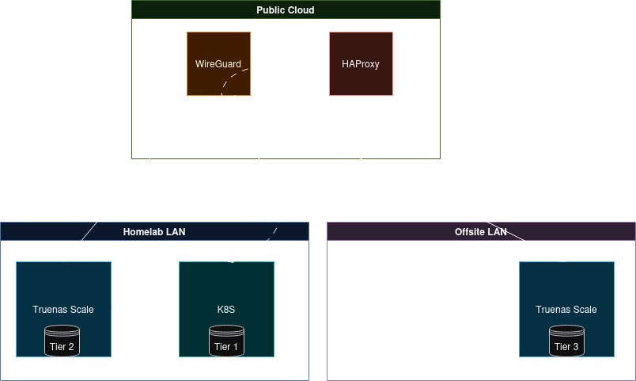
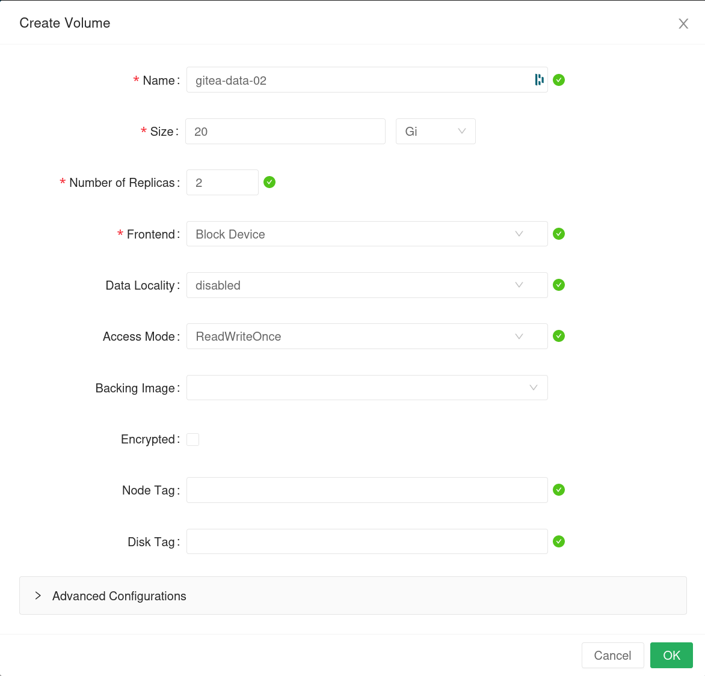
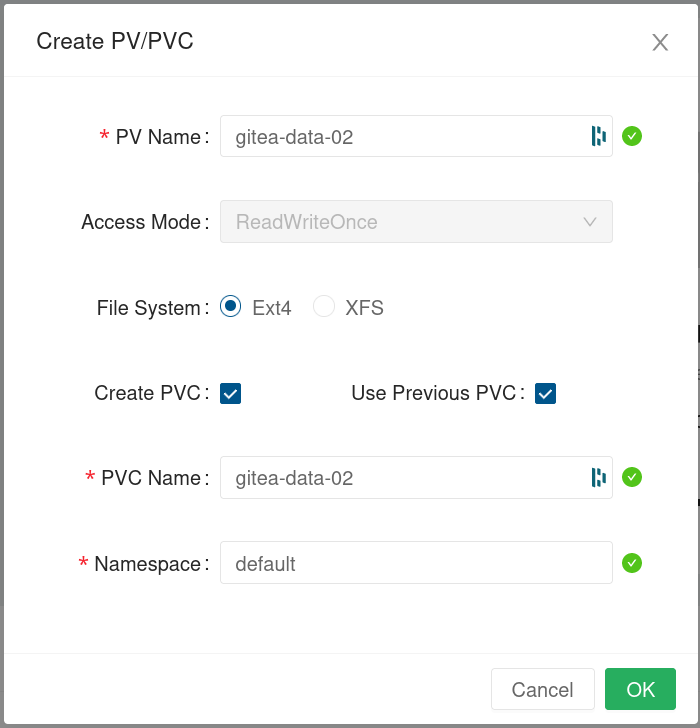
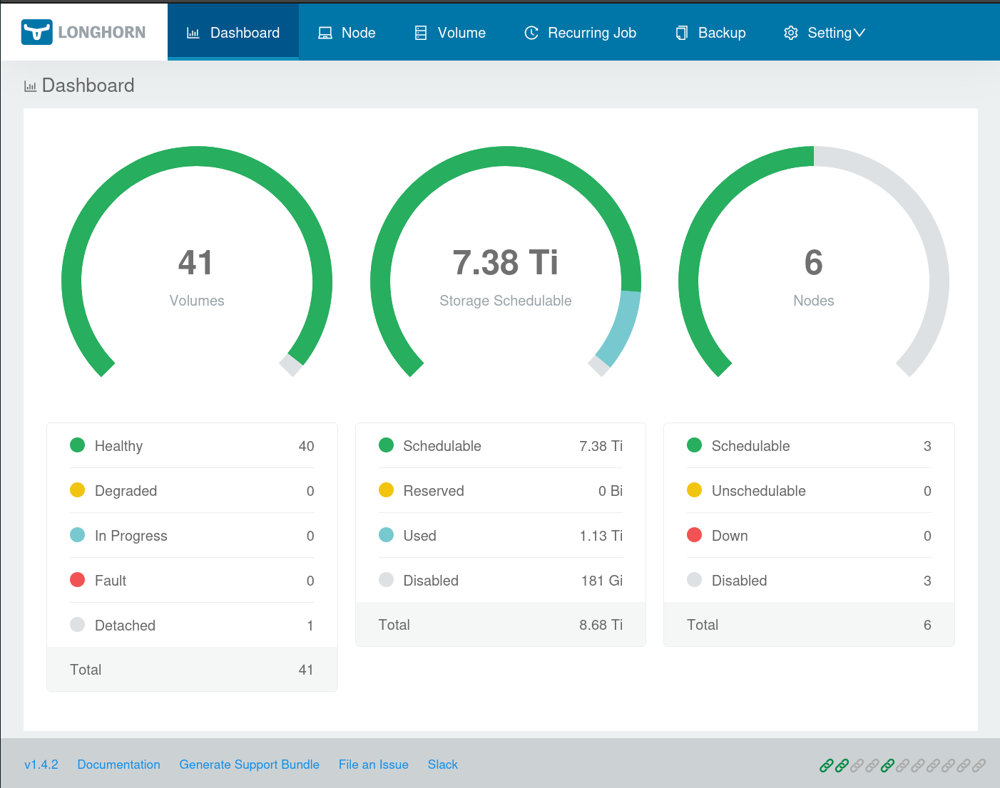
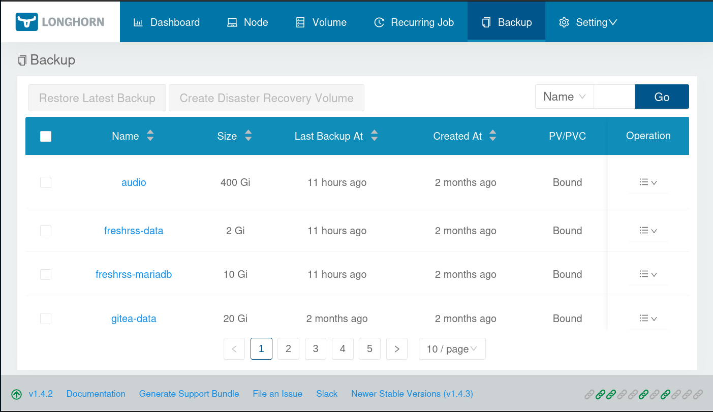
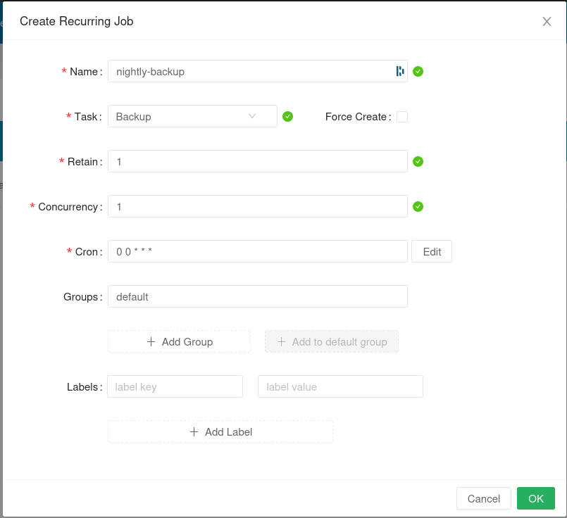
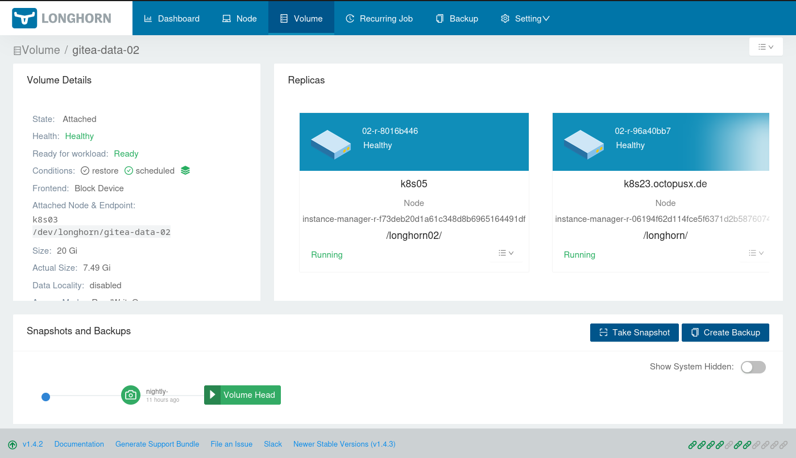
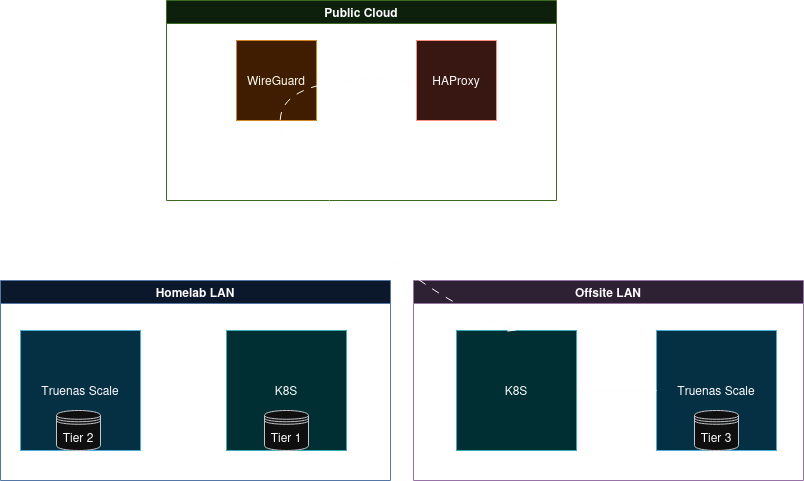
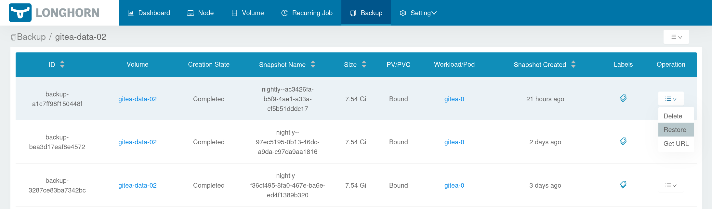
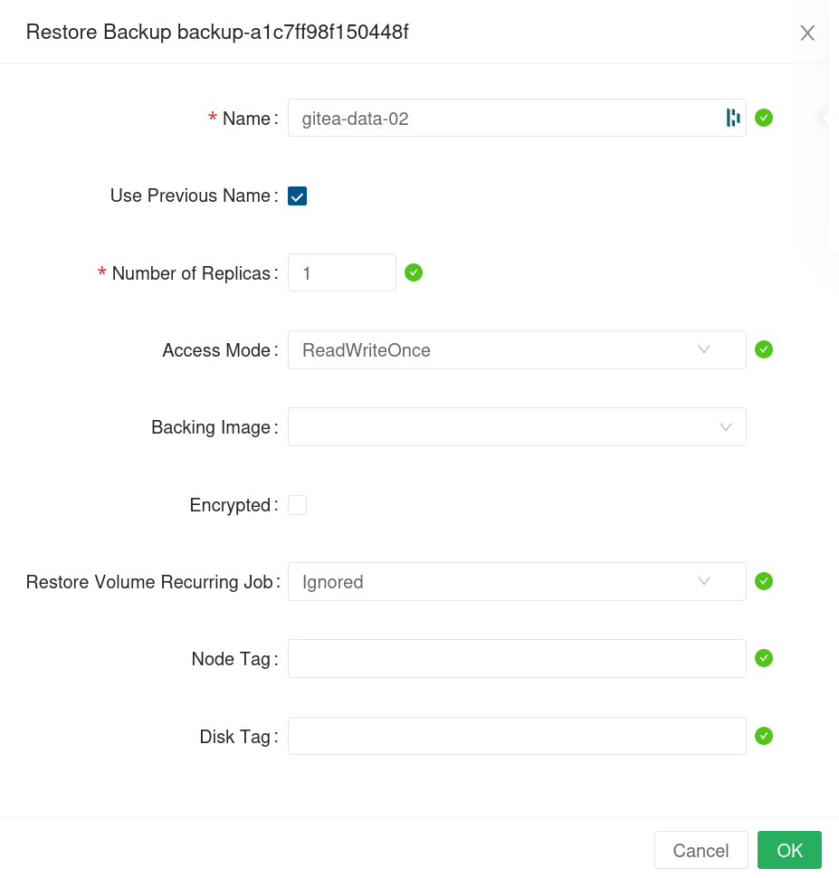

10 minutes
Backup and Restore
So, you have a backup. Wait, two backups? And a third one off site too?? But… You have tested the restore procedure, right? No!? Damn son, what do you need a backup for if you don’t even know if you can restore it???
If you can’t restore it, you don’t really have a backup…
Protecting your data doesn’t end at having a 3-2-1 backup. Whether you are self hosting services or handle company data in the cloud it pays to have a practiced plan for bringing your services and data back to life. If all you’re going to do is read this section of the post and move on with your life, I’d like you to take with you just this one key lesson: don’t leave testing of your restore procedure until you actually need to restore! For anyone more technically minded I recommend to read through the log of a GitLab outage from 2017, where in the middle of an outage an employee accidentally deletes a live database, then realises that the S3 backups they thought they had were never actually working! Yikes! Let us see how I deal with backups and disaster recovery in my homelab using the insights I have learned working in the industry. All using open and free software!
The chicken and egg situation
So as we are talking about a homelab situation in this article, we are always going to be limited by certain inavitable factors. Like, most people have just one internet connection. Single source of electicity, a UPS in a best case scenario. What most homelabers also have in common is that they’re building this entire stack in their own spare time. It often means that we can’t just throw more hardware nor more elbow greese at the problems we encounter.
In a pevious article I outlined how I improved both my uptime and reliability by building a multinode k3s cluster. In that post I have described a situation where I had to scrap my cluster almost entirely twice before I was able to get it just right. Something however that I did not do was have a decent way to protect my data while this all was happening, which meant that, at least for some applications. I had to rebuild my Nextcloud instance from scratch, but even worse, I lost my Gitea instance and all the automations I ran from it.
So, if the infrastructure needed to restore your infrastructure is gone, what can you do? Well, let’s go over our options.
How do I back up so far…
Logically my storage solution has 3 tiers.
Tier 1
Live data being accessed by my applications and services running in my k3s cluster.
This data is stored on fast NVME storage, and replicated across multiple physical Kubernetes nodes. This tier of storage is completely managed by Longhorn.
Tier 2
Backup of the live data hosted on the local network, using an NFS share on a virtualised Truenas Scale node.
This data is stored on a redundant RaidZ2 array on a single node. Data makes its way onto this Truenas instance using Longhorn’s nighly snapshotting and backup mechanism. Data on this tier is at most 24h old at any given time.
Tier 3
Offsite copy of Tier 2 to another Truenas Scale machine, using Truenas’ built in replication mechanism.
This data is also stored on a redundant RaidZ2 array on a single remote node. This data makes its way onto the offsite Truenas instance via a Wireguard server hosted in the public cloud. Data is pushed in form of incremental backups and it is at most 48h old at any given time.
Visualisation

Longhorn and friends
So as you see this backup strategy relies heavily on Longhorn, which is a kubernetes storage orchestrator with powerful snapshotting and backup capabilities. What I found particularly interesting was that you can point multiple instances of Longhorn, each maintaining the storage of a completely separate Kubernetes cluster, to the same backup location. What this allows you to do is essentially use the backup and restore mechanism as a migration utility to move storage volumes between Kubrnetes clusters!
The beauty of this solution comes likewise from the fact that our workloads are running in Kubernets and that we are using Helm charts to deploy our applications. Helm charts which, conveniently, we are treating as our infrastructure as code.
Having both, the portability of application data (Longhorn-managed k8s storage volumes) and application configuration (helm charts) means that we have a repeatable, reliable way to migrate our workloads off site and spin them back up at will!
What is the last thing you need to get started? A good friend who will allow you to spin up an offsite k3s cluster on his Truenas box ;)
The nitty gritty
Let’s go over the different moving parts that we need to set up to see how it all works.
Longhorn helm chart
I am using the official longhorn helm chart:
# Chart.yaml
apiVersion: v2
name: longhorn
version: 0.0.1
appVersion: v1.4.2
description: Longhorn is a distributed block storage system for Kubernetes.
icon: https://raw.githubusercontent.com/cncf/artwork/master/projects/longhorn/icon/color/longhorn-icon-color.png
dependencies:
- name: longhorn
version: 1.4.2
repository: https://charts.longhorn.io
You can find all of the parameters in the github repo: https://github.com/longhorn/charts, but what we want to focus here is the following configuration values:
# values.yaml
longhorn:
defaultSettings:
backupTarget: nfs://scale.octopusx.de:/mnt/hybrid/longhorn-backup
backupstorePollInterval: 60
defaultLonghornStaticStorageClass: longhorn-static
(...)
Notably, we need to set the backupTarget and the defaultLonghornStaticStorageClass.
The target will be an NFS share made available by the Truenas Scale running on my local network.
The static storage class will be a persistent volume class created inside of Kubernetes for all volumes that are created “statically”, i.e. not automatically as part of bootstrapping a new application. Using this method of provisioning the initial volume as well as restoring one from the backup means that the proces of bootstrapping this application is nearly identical for both the main instance and the backup one on the remote cluster.
Create a static volume for Gitea
To create a new static volume for our Gitea to use, we go to the Volumes tab in Longhorn then click on Create Volume and fill in the form:

Next click on the new volume and ask longhorn to create the PVC and PV for you inside Kubernetes: 
Gitea helm chart
Normally you can provision new volumes dynamically, declaring the size and class. Since we are using a pre-provisioned volume and the PVC for it already exists, we can use the existing claim variable to pass it to our gitea chart.
gitea:
(...)
persistence:
enabled: true
size: 20Gi
accessModes:
- ReadWriteOnce
existingClaim: data-gitea-02
You’ll obviously need the rest of the chart to deploy gitea, you can find the template I use here.
Deploying this chart should looks identically on my main Kubernetes cluster as well as the remote backup instance.
Longhorn Backup
If you are following along we should be able to access the Longhorn web UI, so long as you have enabled it in the helm chart:

If all of this worked you should be able to go to the Backup tab and not see any connection errors. In my case, that NFS mount already contains earlier backups of various volumes I have backed up from a number of kubernetes clusters.

Perfect! Now, we don’t want to make backups manually. This is a homelab after all, it’s is not our job to do all of the meneal tasks manually, it is to automate them away! The Recurring Jobs tab will let us do just that, here we can schedule nightly backups of whatever volumes we want. We can create a group label and label each volume with it to link it to a specific recurring task. For us, we will use the default group, which is already attatched to every single volume, like so:

And that is it for the Longhorn backups, this will trigger a kubernetes job every night at the selected time and do the work. The backups are incremental so it is storage efficient if we desire to keep multiple backups for each volume by setting the Retain value to anything above 1. Once a backup is performed you can verify it by going to the Backup tab or any volume specifically, like this gitea data volume that we use for this example:

Offsite Backup
With backups of kubernetes cluster PVCs securely pushed every night to our Truenas server via NFS, the next step for me was to do the push from tier 2 (local backup) to the 3rd tier (offsite backup). This I achieve via the use of Truenas replication feature. I won’t be covering this step in detail as the replication itself is a well documented feature, so I will send anyone interested to the official Truenas documentation.
As for how do my local Truenas host talks to the remote Truenas, I use Wireguard VPN. Technically Truenas scale doesn’t have the option to configure Wireguard in the UI (though OpenVPN is an option), but Wireguard binaries are preinstalled (at least they are at the time of writing, I am currently running TrueNAS-22.12.3.2 Bluefin). This means that you can easily follow my previous post and simply add both the local and remote Truenas hosts to your Wireguard network via your cloud-hosted Wireguard server.
Restore from offsite backup

Restoring from backups is very simple in Longhorn. On our remote backup K8S instance we will go to the Longhorn Web UI, the Backup tab, then select the volume to restore:

Create the volume with the same name as the previously backed up volume: 
Ask longhorn to create the PVC and PV for you inside Kubernetes:
The rest of the steps is identical to bootstrapping the original Gitea instance! Just make it use the existing, restored PVC which conveniently already has the correct name :)
Switching traffic to the offsite backup
As it can be seen on the beautiful visualisation I produced, the way I access services in my homelab from the outside world is by hosting a HA proxy in the public cloud. A subnet router node is deployed on both my Homelab LAN and Offsite LAN (not actually represented on the graph) that is able to route traffic to the respective networks. This means that switching traffic from one deployment to the other is as simple as changing a few lines of code in the HAProxy config:
frontend traefik_public
bind *:443
default_backend homelab # <- We change homelab to offsite here
option forwardfor
# Homelab LAN Backend
backend homelab
# Use roundrobin to balance traffic
balance roundrobin
# Define the backend servers
server backend01 192.168.50.50:443 check
# Offside LAN Backend
backend offsite
# Use roundrobin to balance traffic
balance roundrobin
# Define the backend servers
server backend01 192.168.150.50:443 check
Then we restart the HAProxy service, all done!
The neat outcome of it all
So, for those of you that are more familiar with Kubernetes, you will have spotted that I omitted a number of other things that have to be synced between the two clusters in order to be able to switch traffic freely between them. For a start, Gitea has a database, so you will need to backup its volume and restore that too. However, the neat thing about this solution is, the backup and restore procedures are identical for each and every volume, and they should work just as well, so I didn’t feel it was worth doubling up on the explanation.
Another, and crucially, untouched topic here would be certificates. One way to solve this cleanly would be to resolve TLS at the HA proxy, which means you don’t need to do anything with the certs when you fail over. Alternatively you would have to sync your certificates between the clusters in some other way, or use features of Traefik or another ingress controller to generate all of the certs you want on both systems in parallel.
Lastly, how I actually use this in practice, and how I recommend you do it - the failover is fancy and shows the power of this solution, but I just use the wireguard network I already have to access my backups if necessary. More importantly, thanks to this wireguard network I can perform these restores once a month or so, to make sure the whole process still works. Because, as I alluded to at the very beginning, if you haven’t tested your restore procedure, do you even really have a backup?
2074 Words
2023-08-04 19:47